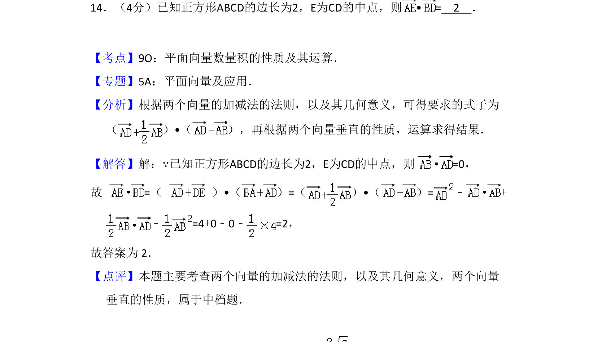
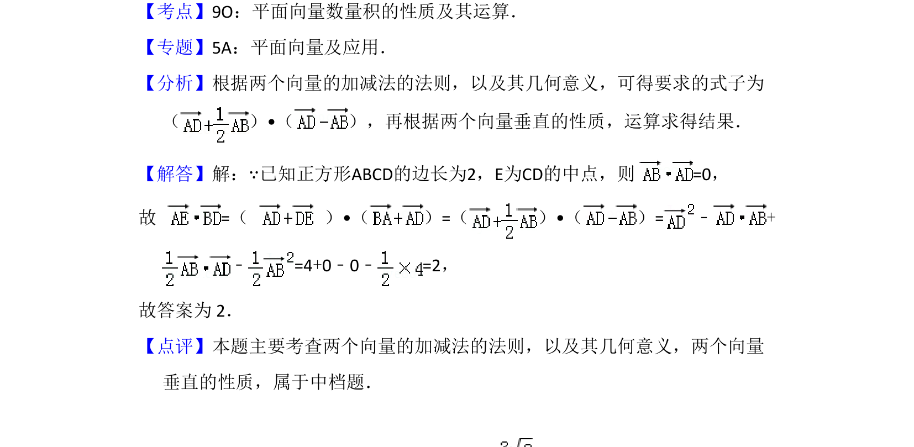

考点：平面向量数量积 向量加减法的几何意义 向量垂直性质

该题通过正方形中向量的线性运算求数量积，考查向量加减法的几何意义与垂直性质。

📄 原 PDF 第 12 页：
素材/真题/吉林/2008-2024·（吉林）数学高考真题/2013年高考数学试卷（文）（新课标Ⅱ）（解析卷）.pdf
14．（4分）已知正方形ABCD的边长为2，E为CD的中点，则• = 2 ．
【考点】9O：平面向量数量积的性质及其运算．菁优网版权所有 【专题】5A：平面向量及应用． 【分析】根据两个向量的加减法的法则，以及其几何意义，可得要求的式子为 （ ）•（ ），再根据两个向量垂直的性质，运算求得结果． 【解答】解：∵已知正方形ABCD的边长为2，E为CD的中点，则 =0， 故 =（ ）•（ ）=（ ）•（ ）=﹣+ ﹣=4+0﹣0﹣=2， 故答案为 2． 【点评】本题主要考查两个向量的加减法的法则，以及其几何意义，两个向量 垂直的性质，属于中档题．